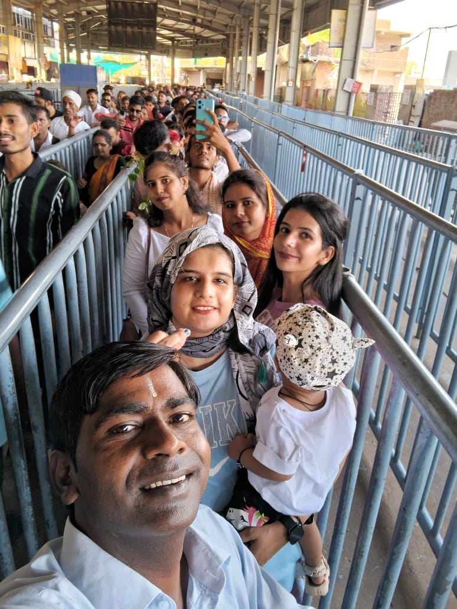
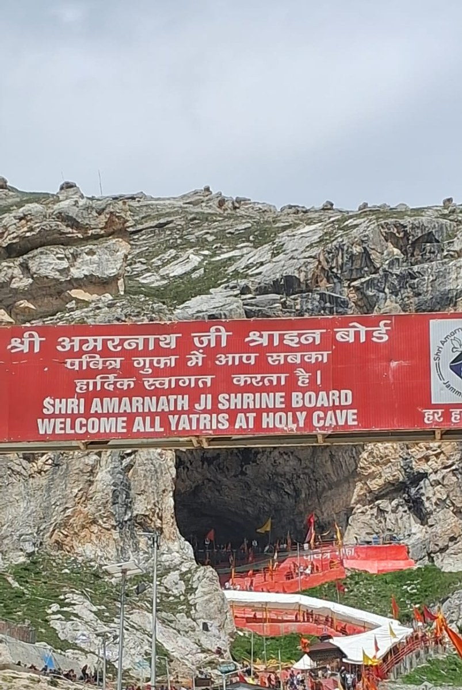
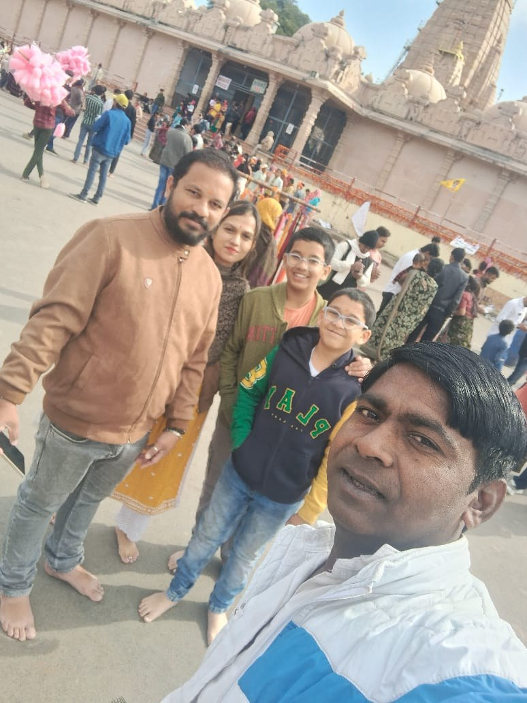
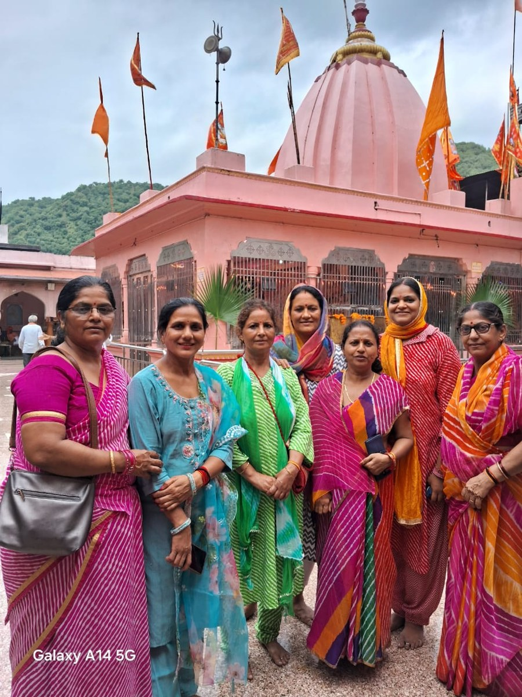
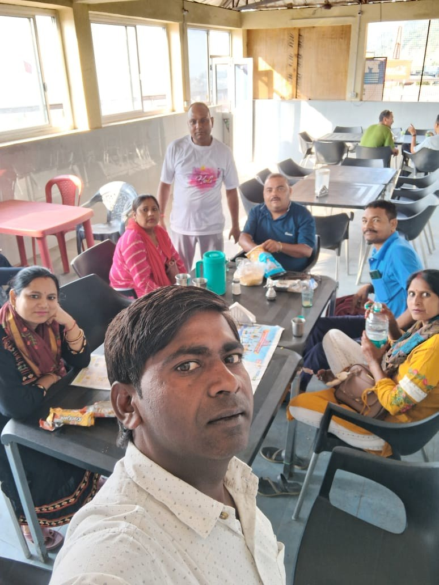
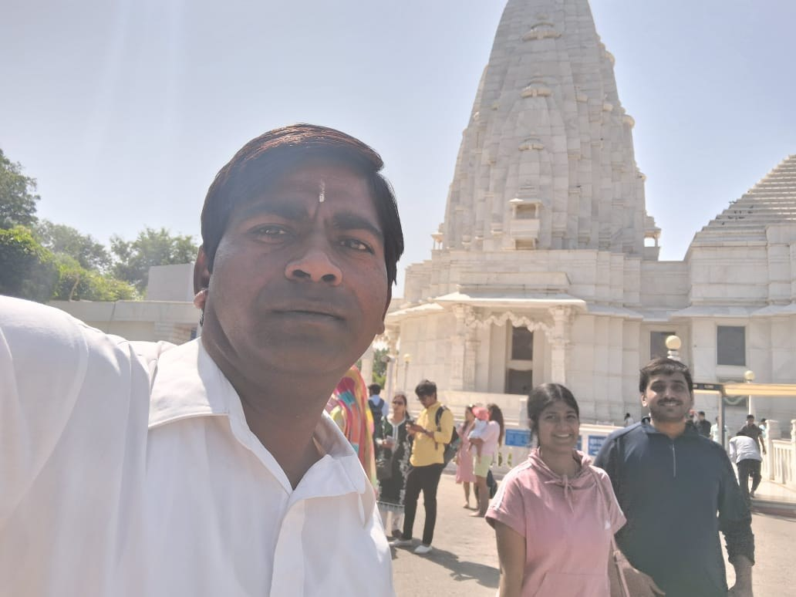
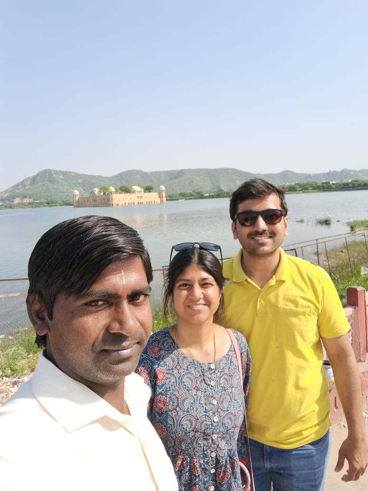
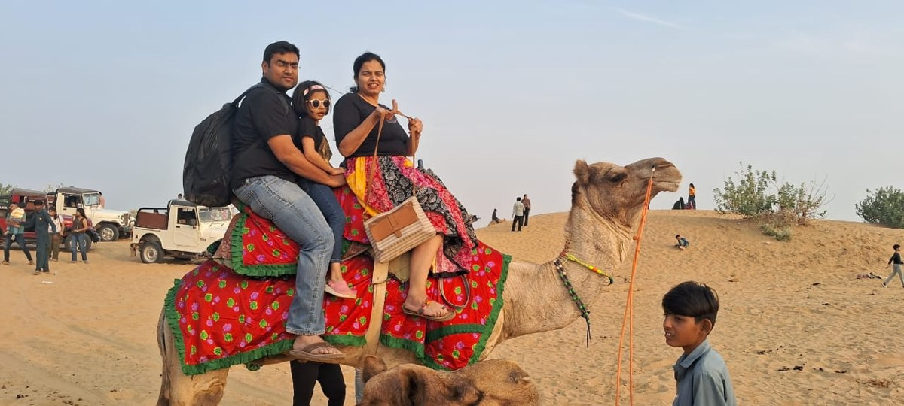

Complete holy Himalayan circuit covering Kedarnath, Badrinath, Gangotri, and Yamunotri with expert mountain chauffeuring.

The Yoga capital of the world on the holy banks of Mother Ganga with iconic suspension bridges, ashrams, and evening aartis.

Gateway to the Gods where millions take the holy dip at Brahma Kund, witnessing soul-stirring Ganga Aarti.

The divine playground of Lord Krishna with magnificent temples, lively bhajans, and eternal devotion in Braj Bhoomi.

The sacred birthplace of Lord Rama with the grand newly consecrated temple and historical ghats of river Saryu.
The eternal city of Lord Shiva, glowing Ganga aartis, Kashi Vishwanath corridor, and mystical spiritual ghats.

Confluence of the holy Ganga, Yamuna, and Saraswati rivers, renowned for Kumbh Mela and monumental heritage.

World-famous city of the Taj Mahal, Mughal architecture, UNESCO World Heritage monuments, and Agra Fort.

Queen of the Hills featuring colonial heritage, scenic toy train views, lush cedar ridges, and Kufri snow adventures.

Spectacular high-altitude resort town on the Beas River, connecting to Solang Valley, Rohtang Pass, and Atal Tunnel.

Valley of Gods celebrated for apple orchards, Beas river white-water rafting, and the famous Bijli Mahadev peak.
Home to His Holiness Dalai Lama in McLeod Ganj, surrounded by cedar forests, Tibetan monasteries, and cricket ground.
Quaint hill station with colonial charm, pine-clad valleys, and the picturesque meadow of Khajjiar (Mini Switzerland).
The royal capital of Rajasthan. Perfectly explored over 2 full days covering grand hilltop forts, palace corridors, gates, and markets.

The Venice of the East with breathtaking palaces situated on serene Lake Pichola, historic gardens, and Rajput grandeur.
Renowned Royal Bengal Tiger reserve with ancient 10th-century hill fortress and revered Trinetra Ganesh temple.
Only hill station in Rajasthan situated on the Aravalli range, famous for marble Dilwara temples and pleasant climate.

The Golden City on the Thar Desert edge, with a living golden fort, ornate yellow sandstone havelis, and desert camping.
Historic fortress city renowned for unconquered ramparts, intricate jharokhas, and authentic camel culture.
The iconic Sun City topped by the majestic Mehrangarh Fort towering above thousands of indigo-painted heritage homes.
World-renowned pilgrimage for Barbarika (Hare Ka Sahara). Located 80km from Jaipur with round-the-clock taxi drops.
Revered shrine of Lord Hanuman featuring the unique bearded/mustached vigrah, drawing devotees from across the country.
Pay only for the distance traveled. Prompt on-time pickup from your Jaipur hotel, home, or airport terminal.
Smooth expressway journey via Bharatpur / Fatehpur Sikri. Instant drop at hotel or Taj Mahal entrance.
Book Jaipur to AgraComfortable ride on Delhi-Jaipur Expressway or NE-4 Expressway straight to Delhi NCR or IGI Airport Terminal 3.
Book Jaipur to DelhiScenic highway route connecting Jaipur with Udaipur via Kishangarh, Bhilwara, and Chittorgarh.
Book Jaipur to UdaipurFast transfer via Tonk and Deoli into coaching hub Kota. Safe travel for students, parents, and corporate visits.
Book Jaipur to KotaShort highway sprint to Ajmer Sharif Dargah, Brahma Temple, and Pushkar Lake with same-day return or one-way drop.
Book Jaipur to AjmerWhether hosting a corporate summit at JECC Sitapura, an executive conference, or managing wedding guest logistics across Jaipur hotels, we provide punctual coordination with Dzire, Innova, Tempo Traveller, and luxury Bus options.
Fleet allocation for multi-day conferences at Jaipur Exhibition & Convention Centre (JECC), Birla Auditorium, and 5-star hotels with scheduled shuttles.
Corporate InquiryHassle-free 24-hour guest pick-ups and venue shuttles across palace resorts (Fairmont, Leela, Rambagh, Samode) with Tempo Travellers & Innovas.
Wedding Transport InquiryPush-back AC Tempo Travellers (12/17/26 seaters) and Luxury Volvo Coaches for trade delegations, student study tours, and pilgrimage groups.
Group Booking Inquiry